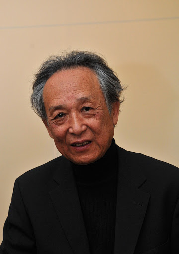
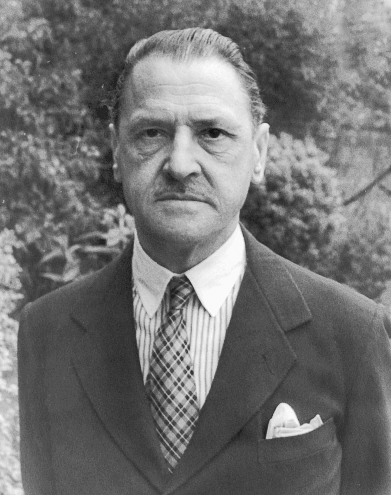
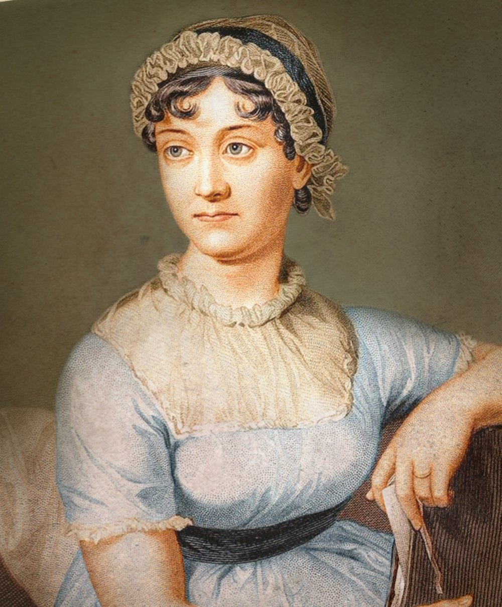

高行健가오싱젠은 1940년 1월 4일 중화민국 국민정부 시대 중화민국 장시성 간저우시에서 출생하였으며 지난날 한때 국민정부 시대 중화민국 장쑤성 타이저우 시에서 잠시 유아기를 보낸 적이 있다. 그는 1957년부터 1962년까지 베이징 외국어대학에서 프랑스어문학과를 다녔으며, 또한 1970년부터 1987년까지는 중국 공산당의 당원이었다.
문화 대혁명이 끝난 이후부터 번역가로 활동하기 시작했고 1978년 이후부터 여러 소설과 희곡을 발표하였다. 하지만 그의 친국민당적인 사상이 문제가 되자 중화인민공화국 당국은 중국 공산당 당국을 비판했다는 이유로 그를 반체제 인사로 지목하였다. 이를 계기로 1987년에 프랑스에 망명을 신청했고 1998년에는 프랑스 시민권을 취득하면서 중국계 프랑스인이 되었다. 1992년에는 프랑스 정부로부터 예술 문학 훈장을 받았지만 그의 작품들은 중국에서 금서로 지정되었다.
2000년에는 날카로운 통찰력, 언어적 독창성이 드러나는 작품을 통해 중국어 소설과 드라마의 새로운 길을 연 실적을 인정받아 해외로 망명한 중국어권 작가로는 사상 처음으로 노벨 문학상 수상자로 선정되었지만 중국에서는 그가 노벨 문학상 수상자로 선정된 것에 비난이 일기도 했다.

서머싯 몸
William Somerset Maugham
잉글랜드의 소설가 겸 극작가. 프랑스 파리의 영국대사관에서 일하던 영국 외교관의 아들로 프랑스에서 성장했다. 어린 시절 아버지가 세상을 떠난 후 사제였던 삼촌에게 거둬진다. 이후 공인회계사 공부를 하다가 그만둔 뒤 킹스 칼리지 런던에서 의과대학을 졸업, 의사 면허를 취득했지만 문학에 더 큰 흥미를 느껴 작가로 활동했다.
제1차 세계대전 직전에 완성한 장편 소설 '인간의 굴레'는 작가의 고독한 청소년 시절을 거쳐 인생관을 확립하기까지 정신적 발전의 자취를 더듬은 자서전적 대작으로 대표적 걸작이다. 그 외에 긴 생애에 걸쳐 많은 작품을 남겼다.
제1차 세계 대전 때 MI6 소속 스파이로 러시아에서 활동한 적이 있으며 그 체험을 소설로 쓴 적도 있다.[4] 또한 극작가로서 희극에도 재능을 보여 오스카 와일드풍의 희곡 프레드릭 부인 등 코미디 희곡도 많이 썼다. 더불어 당시만 해도 극히 일부에게 인정받던 폭풍의 언덕을 높이 평가하며 언론 여기저기에 크게 다루면서 이런 명작이 묻혀지다니 이건 죄악이라고 한탄했다. 이런 노력에 힘입어 이 소설은 재평가되고 영국 문학에서 전설이 되었다. 또한 당시 알려지지 못한 모비 딕도 엄청 높게 평가하여 여기저기 알린 인물이기도 하다. 폭풍의 언덕이나 모비 딕에 밀려보이긴 해도, 몸이 쓴 달과 6펜스나 인간의 굴레 또한 영문학 최고걸작 50에 들어가는 불후의 명작으로 엄청난 평가를 받고 있으며 몸도 서구 영문학 연구가들에게 대문호로 인정받고 연구 중이다.

제인 오스틴
Jane Austen제인 오스틴은 사후에 굉장한 유명세를 얻은 영국 태생 소설가이다. 섬세한 시선과 재치있는 문체로 18세기 영국 중·상류층 여성들의 삶을 다루는 것이 특징이다. 생전에는 그리 유명하지 않았으나, 20세기에 들어와서 작품 중 《오만과 편견》, 《이성과 감성》등이 여러 번 영화화되는 등 인기를 끌고 있다.
제인 오스틴은 영국 소설의 ‘위대한 전통’을 창시했다는 평가를 받고 있다. 단 여섯 편의 소설로 200년 가까운 세월 동안 전 세계의 독자들을 매료시켰다. BBC가 ‘지난 천년간 최고의 문학가’를 묻는 설문 조사에서 셰익스피어에 이어 2위를 차지했다.
《프랑스 혁명》, 《미국 독립전쟁》, 프랑스와의 빈번한 전쟁 등으로 혼란스러웠던 격변기에, 한적한 시골을 배경으로 젊은이들의 연애를 그린 오스틴의 소설은 역사의식과 사회 인식이 결핍되어 있다는 비판을 받기도 했다.
오스틴의 소설이 개인들의 일상생활에 한정된 소우주를 그려낸 것은 사실이지만, 오스틴은 누구보다도 세밀한 관찰력과 날카로운 비판적 시각으로 당대의 물질 지향적인 세태상과 허위의식을 풍자하면서 도덕의식을 예리하게 탐구했다. 또한 당대에 유행하던 고딕 소설과 감상 소설, 로맨스 등 대중적인 문학 장르의 관례적인 기법들을 다양하게 실험하면서 리얼리즘에 입각하여 정교한 작품 세계를 창조했다.

토니 모리슨
Chloe Anthony Wofford Morrison그녀의 소설은 서사적인 테마와 생생한 대사, 풍부하게 묘사된 흑인 등장인물들로 유명하다. 그녀의 소설에는 The Bluest Eye, Song of Solomon, Beloved가 있으며, Beloved로 1988년에 소설 부문 퓰리처 상을 받았다. 그녀의 작품은 무대에서 공연되고 영화화되고 있다.
뉴욕타임스(NYT)는 "모리슨은 비판적이면서도 상업적 성공까지 이룬 드문 작가"라고 평가한 바 있다. 미국사회에서 흑인이라는 소수인종이 겪는 아픔, 그 중에서도 흑인남성들에 의해 또 다시 멸시 당하는 흑인여성들의 상처와 소외를 담는 동시에, 여성의 고통을 그리는 것에서 나아가 여성들간의 화해와 용서를 치열하게 그려낸 것으로 평가받는다.